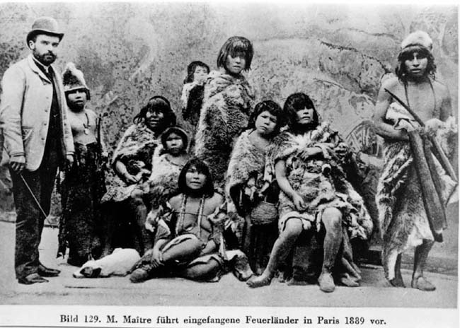

|
|  |
|
Bild 129. M. Maitre fuehrt eingefangene Feuerlaender in Paris vor
, 1889
|
In the extreme south of the continent, the indigenous population of Tierra del Fuego was massacred in only a few decades by white settlers alleging their incapability to adapt to the rhythm of progress and civilisation, given their abyssal state of 'backwardness'. This group of Yamana Indians was exhibited as a 'live display' at the Paris Universal Exhibition of 1889. They were left stranded in France after their 'impresario' went bankrupt, several of them nevertheless managing to return to their native land.
|